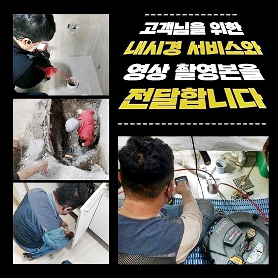
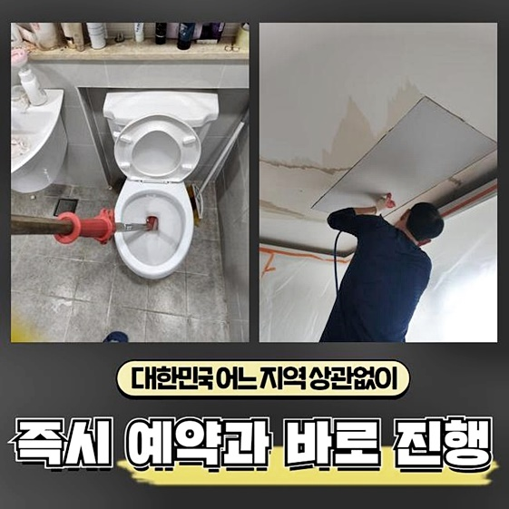
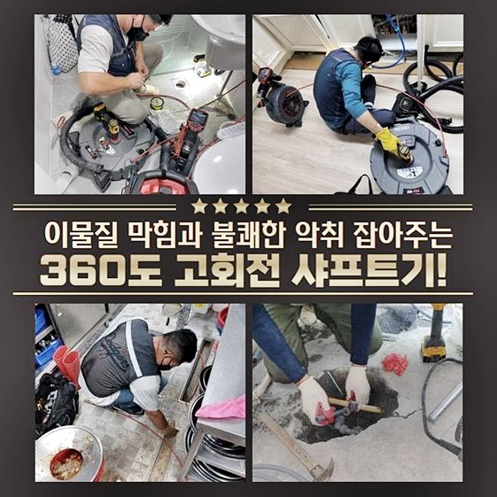
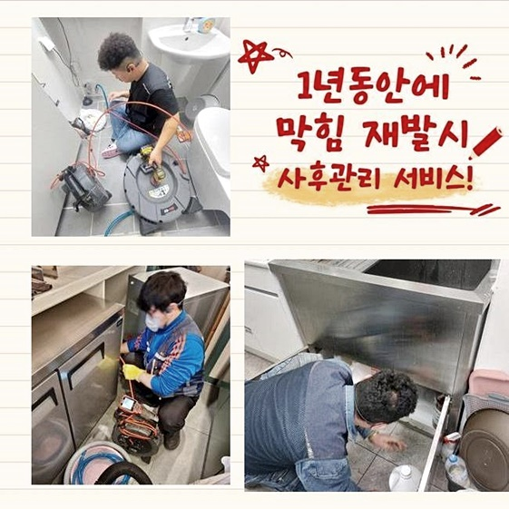
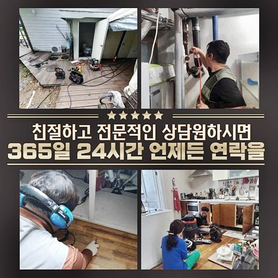
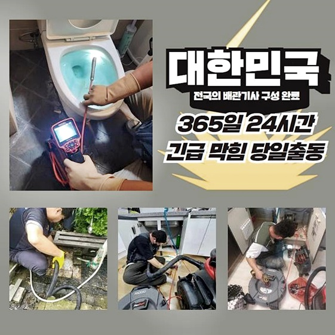

🏠 천안 다가동세탁실역류 일봉동 악취차단 설비
천안 일봉동 싱크대막힘 전문 시공 후기

📋 작업 개요
- 위치: 천안 일봉동, 일봉동, 천안
- 서비스 유형: 싱크대막힘, 하수구막힘, 배관막힘, 역류해결, 뚫는업체, 배관청소, 고압세척, 악취차단
- 작업 일시: 2024. 6. 5. 9:17
- 업체명: 하수구수사대 (010-5615-2118)
🔍 문제 상황
천안 다가동세탁실역류 일봉동 악취차단 설비
여러사람들이 모여서사는 다세대의 주거형식의경우 하수구시스템을 활용하는 경우가많아 배관을 뚫어달라고 문의가 많이들어와요
여러 주민들이 생활하면서 욕실 싱크대 배관을 거쳐서 이용했던 물을 내려보내면 주택에 설치 되어 있는 메인 하수관에 고여들어서 이물질같은게 쌓일 수밖에 없습니다
보이지않는 잔해물들이 하수도의 물이흘러나가는 관을막게되서 하수구를 이용할수없게끔 진행되는거랍니다
배관막힘때문에 하수도물이 흘러가지못한다면 전문인을 부르셔야해요
이틀전에 다녀왔었던 현장내용을 바탕으로 설명드리려고하니 꼼꼼히 읽어보신다면 도움될겁니다
다세대로 거주하고있는 일부세대에서 하수구시스템이 원활하지않아 곤란함을 겪게되었다고 연락주셨다고 하셨는데요
우선시로 점검한건 여러세대에서 이용한물이 전체적으로 만나게되는 메인하수관을 점검해봤죠
빈번하게 배수관이 막히는경우 제일 중요한것으로 막힘원인을 세세하게 알아내야해요
어떤이유에서 막히게되었는지 주된이유인 이물이뭔지 알고있어야 알맞은 작업을통하여 세세하게 배관수리가 이어질수있답니다

🔎 원인 분석
💡 전문가 진단: 정밀 진단 장비를 사용하여 슬러지의 고착 여부를 판명하고 타격/세척 작업을 실시했습니다.
외부하수구의 안쪽을 살펴봤더니 물이고여있고 배수되지못하는 상황이었죠
막힌하수구를 확인해봤더니 좀만더 방치한다면 아파트안에 거주하고있는 모든집에서 배수가 느려지게 될것으로 판단되었는데요
아파트에서는 아래층부터 막힘증세로인해 인하여 곤란스러움이 일어나게된답니다
2차피해가 이어지면 물이넘치거나 새버리는경우로 발생할수있어요
2차적인 현상들로 이어지지않도록 빠르고 세세한 하수관작업이 이루어져야했죠
빠져나가지못한 물들은 필수적인 장비인 석션장비로 빨아들였어요
고인물이 제거되고나서 아래에있는 하수도내부를 살펴보고자 내시경기기를 투입시킨답니다
하수구안쪽은 두눈만을 가지고는 파악할수없기에 하수구카메라가 필수랍니다
하수구 현장이라면 카메라기기는 필연적으로 사용시되는 장비에요!
내시경으로 들여다보니 하수구통로의 이물질들이 배관벽면에 달라붙어 막힌걸로 파악되었으며 배관시스템을 점검받은지 오래되었던것으로 보였습니다
배수구속을 막아버린 이물들이 한가정에서만 발현된것이아니라 연결된 메인배관쪽이 문제를보였던 상황인것으로 볼수있었기에 배관고압세척을 통하여 청소를해야했어요

🔧 작업 과정
고객분들은 많은이유로 하수도가막혀 문의하고계세요
어떤이유로인해 문의주실지 알수없으므로 상시대기로 전문기기들을 챙기고있죠
작업장소마다 확실한 작업으로 문제들을 타파해야만 반복되서 막히는일이 발생하지않는답니다
저희업체는 최신식의 전문기계를 보유하고있고 자주장비를 체크하고 깔끔한상태로 유지시킵니다
의뢰현장에 방문드려 바로활용하는데 문제가없게끔 세세히 살피고있기에 막힘증세에대하여 조속하게 해결해드릴수있죠
내시경기계 화면을통해 오염물이 배관속을 막아버린 증세들과 진행할 작업에관해 상세히 설명드린다음 작업에 착수했는데요
배관고압세척은 하수도작업시 많이쓰는 수리방법이죠
효과는좋지만 잘못건드리면 배관파손까지 이어지는 상황을보실수 있으니 실력이있는 전문가가 사용해야해요
저희의경우엔 수리를 진행했던 이력이 셀수도없이 많이있는 수리공께서 하수배관의상태를 꼼꼼히 들여다보고있으므로 염려마세요!
강력한수압으로 물을사용하여 배관속에 모인 찌꺼기들을 제거하고 오염물이 잔뜩붙어있는 하수도벽면을 때를미는듯이 깔끔히 소거하면서 하수구청소를 진행했죠
반복하여 같은과정을 진행해서 오염물이 말끔히 소거되도록 했습니다
물이빠지는 통로가 시원히 해결이되니 심하게 발생하던 냄새까지 제거되었죠
배관세척이 빈틈없게끔 진행될경우 냄새문제도 해결되기때문에 확실한작업이 중요하겠습니다
막힘증상이 유발된 하수구를 수리하고자 설비업체를 서칭하실때 기술력이있는 전문인에게 의뢰하시는것이 좋습니다
전용기기들을 보유하는것도 중요한요소라고 말하지만 손상없이 활용할수있는 설비기사가있는 업체인지 세세하게 파악해봐야해요
철수하기전에 청소가 깨끗하게되었는지 카메라기계를 통해서 살펴본후 물빠짐상태는 정상적인지 체크하고나서야 마무리할수있었죠
청소중에 주변에 튄 오염물은 물세척으로 깔끔히 정리해드렸죠


✅ 작업 완료
많은세대가 살고있는 주거방식은 정기적인 배관관리를 받아보는게 좋아요
하수구가막히면 일부세대만 곤란한것이아니라 전체적인 피해가나타나기에 방치하지마시고 문제가 발생된후즉시 문의하세요!
하수구와 관련하여 의뢰하고싶은 사항이있다면 명확히 알려드리겠습니다
60분안에 도착이가능하며 투명히 작업내용을 공개하므로 안심해주세요
이것외에도 긍금한부분이 풀리지 않으셨다면 시간관계없이 전화하셔서 물어보아도 괜찮으므로 마음편히 전화만주신다면 친절하게 응대하여 도울게요!



⚠️ 주방 싱크대 배관 막힘 예방 수칙
- ✅ 기름기가 묻은 식기나 프라이팬은 설거지 전 키친타올로 반드시 기름때를 닦아내세요.
- ✅ 주기적으로 싱크대 개수대에 뜨거운 물을 가득 받아 한 번에 내려 배관 내부 기름을 씻어내세요.
- ✅ 배수구 거름망을 미세한 필터로 사용하시고 음식물 찌꺼기가 틈으로 새어 들지 않게 관리하세요.
- ✅ 베이킹소다와 식초를 뜨거운 물과 함께 일주일에 한 번씩 부어주면 배관 살균과 막힘 예방에 좋습니다.
💡 핵심 정리
- 확실한 장비 작업(내시경 점검 및 샤프트 스케일링)으로 원인을 뿌리 뽑습니다.
- 작업 후 1년 이내에 동일한 부위 재발 시 100% 무상 A/S 서비스를 보장합니다.
- 서울 · 경기 · 인천 전 지역에 24시간 언제든 긴급 출동할 수 있도록 항시 대기 중입니다.
❓ 자주 묻는 질문 (FAQ)
🚨 천안 일봉동 싱크대막힘 문제로 고민이신가요?
정확한 원인 진단과 확실한 시공으로 재발 없는 해결을 약속드립니다.
24시간 긴급 출동 | 서울 · 경기 · 인천 전지역 | 1년 내 재발 시 무상 A/S